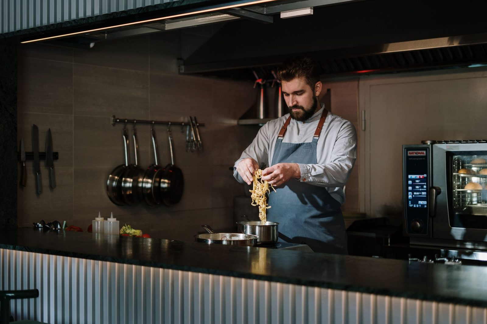

Why the broth tastes like that
Fukuoka, then Kansas
“I cooked in Fukuoka for two years on a work visa and came back to Kansas obsessed.”
— the owner
The pork broth simmers eighteen hours, every day. That is the whole idea behind the shop, and it is the reason the tonkotsu tastes the way it does.
Eighteen hoursof broth, every day.